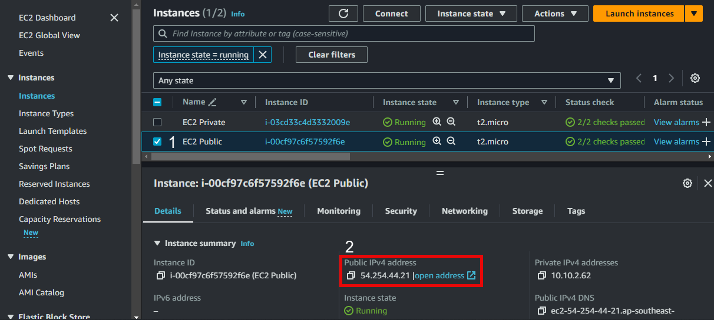
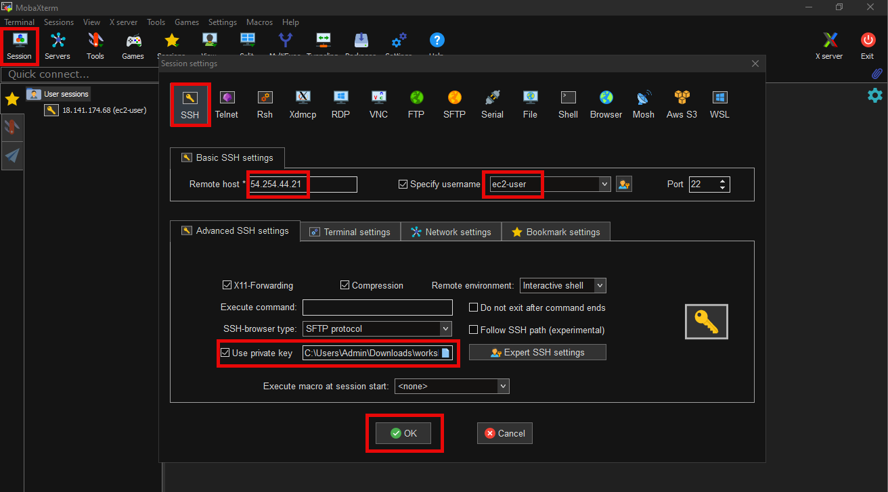
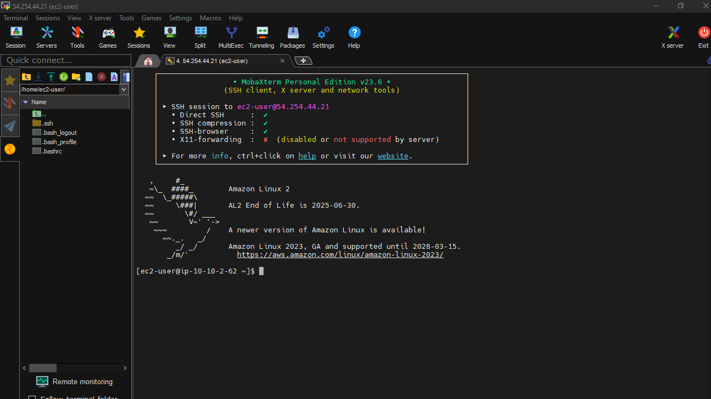
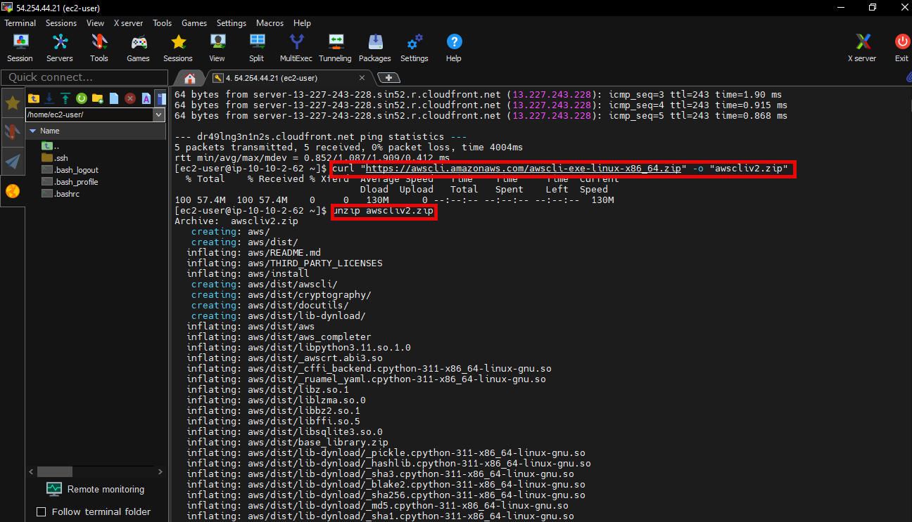
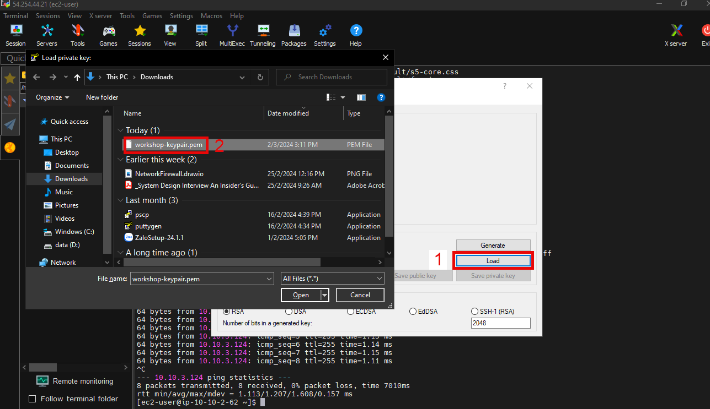
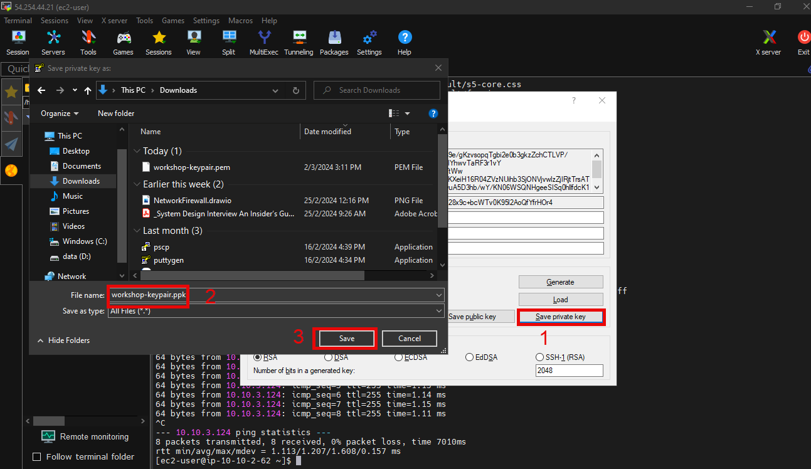
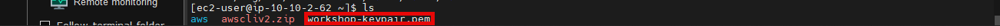
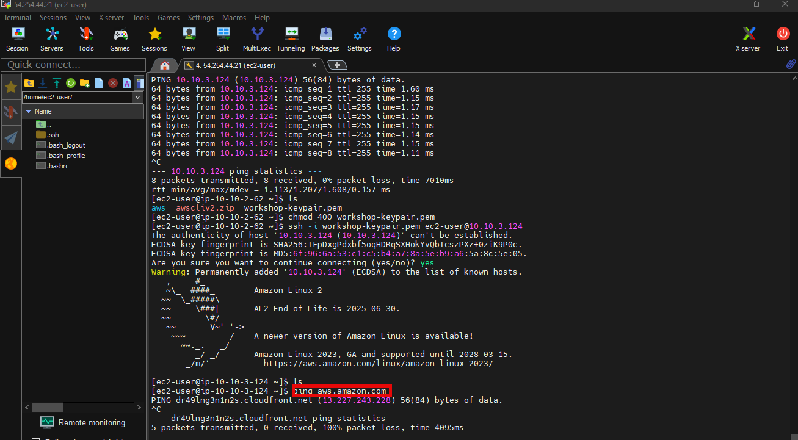

Kết nối tới EC2 và tải AWS CLI
kiểm tra kết nối
Có nhiều cách kết nối EC2, các bạn có thể tham khảo connect to EC2 using PuTTY. Trong bài lab này, chúng ta sẽ sử dụng MobaXterm để kết nối EC2.
- Tải MobaXterm
- Nhấn vào GET MOBAXTERM NOW

- Trong giao diện:
- Chọn Download now

- Sử dụng MobaXterm
- Sau khi tải MobaXterm, giải nén và mở nó.

- Truy cập giao diệnEC2:
- Chọn EC2 Public
- Copy Public IPv4 address

- Mở MobaXterm
- Chọn Session
- Rồi Nhấn vào SSH
- Nhập Remote host (địa chỉ IPv4 public)
- Đặt tên username là
ec2-user - Use private key: Chọn đường dẫn của aws-keypair.pem đã tạo và tải về máy lúc tạo EC2.
- Then Nhấn vào OK

- Kết nối thành công.

- Thực hiện lệnh sau để kiểm tra kết nối internet của máy ảo EC2 Public:
ping amazon.com -c5

Tài liệu tham khảo để tải AWS CLI
-
Trong EC2 Public, để tải AWS CLI, chạy câu lệnh dưới:
curl "https://awscli.amazonaws.com/awscli-exe-linux-x86_64.zip" -o "awscliv2.zip" -
Nếu dòng unzip awscliv2.zip xuất hiện, nhấn Enter.

- Chạy câu lệnh cuối:
sudo ./aws/install

- Xác nhận đã cài đặt thành công AWS CLI với câu lệnh:
aws --version

-
Nếu không thể tìm thấy lệnh aws, có thể bạn cần khởi động lại terminal hoặc thực hiện các bước sửa lỗi trong Hướng dẫn sửa lỗi AWS CLI.
-
Bạn đã tải và cài đặt AWS CLI thành công trên máy ảo EC2 trong public subnet có thể kết nối với internet. - Bây giờ, ta sẽ dùng câu lệnh
aws s3 lsliệt kê tất cả các bucket mà người dùng sở hữu. -
Sau khi chạy câu lệnh aws s3 ls, thì ta thấy có lỗi: Unable to locate credential

Kết nối vào máy chủ EC2 Private và kiểm tra kết nối internet
-
Truy cập giao diện EC2:
- Chọn Instances
- Chọn EC2 Private
- Chọn Details
- Copy Private IPv4 addresses
-
Thực hiện lệnh ping tới địa chỉ IP private của EC2 Private để kiểm tra kết nối từ máy chủ EC2 Public sang máy chủ EC2 Private. Chúng ta kiểm tra kết nối giữa 2 EC2 instance bằng câu lệnh::
ping 10.10.3.124

- EC2 Private sẽ không có public IP address vì chúng ta không gán cho máy chủ này public IP. Để có thể ssh vào EC2 Private, chúng ta sẽ thực hiện kết nối ssh từ EC2 Public thông qua private IP address của EC2 Private. - Download công cụ pscp vào cùng thư mục chứa file aws-keypair.ppk để thực hiện copy file aws-keypair.pem từ máy của chúng ta vào EC2 Public.
Bạn tải an RSA and DSA key generation utility là dạng puttygen.exe
Bạn tải an SCP client, i.e. command-line secure file copy là dạng pscp.exe
- Ta dùng puttygen.exe để generate key
- Chọn Load
- Chọn workshop-keypair

- Chọn OK

- Hoàn thành generation key.

- Khởi chạy Command Prompt. Chuyển đường dẫn tới thư mục bạn vừa download pscp. Chạy lệnh dưới đây để upload file workshop-keypair.pem lên thư mục /home/ec2-user/ của máy chủ EC2 Public.
- Bạn sẽ cần thay thế thông số public IP address của EC2 Public trước khi chạy câu lệnh.
pscp -i workshop-keypair.ppk workshop-keypair.pem ec2-user@<EC2 PUBLIC public IP address>:/home/ec2-user/

- Quay trở lại giao diện kết nối EC2. Để đảm bảo bạn copy file aws-keypair.pem lên máy chủ EC2 Public ta thực hiện lệnh:
ls

- Cập nhật quyền cho file aws-keypair.pem bằng cách chạy lệnh chmod 400 workshop-keypair.pem. AWS yêu cầu file key pair cần được hạn chế quyền truy cập trước khi được sử dụng để kết nối tới máy chủ EC2.
chmod 400 workshop-keypair.pem

- SSH tới EC2 private server
ssh -i workshop-keypair.pem ec2-user@<EC2 Private server's private IP address>

- Thực hiện ping test tới aws.amazon.com. Bạn có thể thấy, chúng ta không thể kết nối internet từ EC2 Private. Trong bước tiếp theo chúng ta sẽ tạo NAT Gateway để cho phép máy chủ EC2 Private kết nối internet theo chiều từ nội bộ đi ra. Giữ nguyên kết nối tới EC2 Private để chúng ta có thể kiểm tra kết nối tới internet sau khi hoàn tất tạo và cấu hình NAT Gateway nhé.
ping aws.amazon.com
